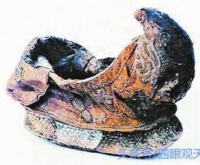

《詩經》魯頌．閟宮
閟宮有侐，實實枚枚。赫赫姜嫄，其德不回。
上帝是依，無災無害。彌月不遲，是生后稷。降之百福。
黍稷重穋，稙稚菽麥。奄有下國，俾民稼穡 。
有稷有黍，有稻有秬。奄有下土，纘禹之緒。
后稷之孫，實維大王。居岐之陽，實始剪商。
至於文武，纘大王之緒，致天之屆，於牧之野。
無貳無虞，上帝臨女。敦商之旅，克鹹厥功。
王曰叔父，建爾元子，俾侯於魯。大啓爾宇，爲周室輔。
乃命魯公，俾侯於東。錫之山川，土田附庸。
周公之孫，莊公之子。龍旂承祀。六轡耳耳。
春秋匪解，享祀不忒。皇皇后帝！皇祖后稷！
享以騂犧，是饗是宜。降福既多，周公皇祖，亦其福女。
秋而載嘗，夏而楅衡，白牡騂剛。
犧尊將將，毛炰胾羹。籩豆大房，萬舞洋洋。孝孫有慶。
俾爾熾而昌，俾爾壽而臧。保彼東方，魯邦是嘗。
不虧不崩，不震不騰。三壽作朋，如岡如陵。
公車千乘，朱英綠縢。二矛重弓。公徒三萬，貝冑朱綅。
烝徒增增，戎狄是膺，荊舒是懲，則莫我敢承！
俾爾昌而熾，俾爾壽而富。黃髮臺背，壽胥與試。
俾爾昌而大，俾爾耆而艾。萬有千歲，眉壽無有害。
泰山巖巖，魯邦所詹。奄有龜蒙，遂荒大東。
至於海邦，淮夷來同。莫不率從，魯侯之功。
保有鳧繹，遂荒徐宅。至於海邦，淮夷蠻貊。
及彼南夷，莫不率從。莫敢不諾，魯侯是若。
天錫公純嘏，眉壽保魯。居常與許，復周公之宇。
魯侯燕喜，令妻壽母。宜大夫庶士，邦國是有。
既多受祉，黃髮兒齒。徂徠之松，新甫之柏。是斷是度，是尋是尺。
松桷有舄，路寢孔碩，新廟奕奕。
奚斯所作，孔曼且碩，萬民是若。
閟宮：神(宗)廟，祭拜姜嫄(后稷之母)的廟
后稷：棄，周朝的始祖
實實枚枚：結構緊密，工程精細
其德不回：有純正美好的德行
黍：黃米
稷：小米
重：穜，先種後熟的農作物。
穋：稑，後種先熟的稻穀。
稙：早種的為稙，豆類
稚：晚種的為稚，豆類
菽：豆類
稼：播種
穡：收獲
秬：黑黍
纘禹之緒：承繼了禹王平治水土的基業
毛炰：去毛之後烹製
胾：切肉
胾羹：和了菜的肉湯
萬舞：祭祀時跳的舞
熾而昌：興盛榮昌
壽而臧：長壽安康
公車千乘：千輛的兵車
朱英：矛上的紅線
二矛重弓：每輛兵車都配有有裝飾的矛與弓
貝胄朱綅：形容士兵的盔甲
荊舒：楚國、舒
昌而熾、昌而大：同熾而昌
壽而富、耆而艾：同壽而臧
黃髮臺背，壽胥與試：長壽老者
萬有千歲，眉壽無有害：享有千萬歲而且沒有病痛
龜蒙：龜山、蒙山
鳧繹：鳧山、繹山
徐宅：徐國
大東：極東，東方之地
海邦：與海相鄰的地方
淮夷蠻貊、南夷：邊韁民族
錫：賞賜
公：魯侯
常、許：常地、許地，都市的名字
復周公之宇：收回失地，恢復周公賞賜時的壃域
令妻：賢慧的妻子
祉：福祉
兒齒：兒童的牙齒，比喻牙齒健康，如同兒童一般
徂徠、新甫：山名
松：松樹
柏：柏樹
斷：砍斷
度：切割
松桷有舄：松樹作為屋角的斜坊
路寢孔碩：正室的寢
新廟：宮室
奚斯：人名，畫宮室設計圖的人
孔：迴廊
曼且碩：長且大
《舄》
